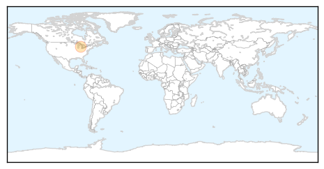

Unknown
30-Day Web Trend
0 alerts, 0 warnings

30-Day Twitter Trend
0 alerts, 0 warnings

Article Locations

Article Confidences

Top Articles:
- 0.994
- Carson City health department announces 2015 flu season community vaccination events
- 0.971
- 7 New Legionnaires’ Cases in Bronx Prompt Investigation
- 0.957
- Education Ministry reports outbreak of hand, foot and mouth disease in several schools
- 0.952
- SERHA Monitoring Cases of Hand, Foot and Mouth Disease
- 0.943
- CDC’s Ryan Wallace: Today is World Rabies Day
- 0.937
- Lyme disease numbers may level after spike in 2014
- 0.928
- Sudan: Disease Afflicts Kabkabiya Children in North Darfur
- 0.922
- Bacteria-borne disease surges in Kansas City-area children
- 0.912
- Shigella On The Rise, 150 Cases Confirmed In Kansas City
- 0.912
- 88 confirmed cases of bluetongue in France, 2.2m vaccines available
- 0.905
- Malaria infection season begins next Month
- 0.904
- Nurse’s Aide Awarded $11.6 Million for Being Paralyzed by Mandatory Flu Vaccine
- 0.895
- Indonesia’s march towards rabies elimination – Khanchit Limpakarnjanarat
- 0.895
- Indonesia’s march toward rabies elimination
- 0.889
- Outbreak of Hand, Foot and Mouth Rash in Schools
- 0.887
- 2015 Flu Season Vaccination Events for Carson City
- 0.881
- Health Department Investigating New Cluster of Legionnaires' Disease Cases in the Bronx
- 0.866
- Countries pledge 40,000 U.N. peacekeepers at U.N. summit
- 0.866
- Bid to revive Miss Iraq pageant draws ire of hardline clerics, tribal leaders
- 0.862
- FAO convenes meeting on Anthrax in West Africa
- 0.860
- City officials are monitoring a cluster of Legionnaires' disease patients diagnosed in the Morris Park neighborhood of the Bronx
- 0.851
- Health bosses issue norovirus threat warning
- 0.851
- Drive to eliminate rabies
- 0.849
- Meeting of Competent Institutions due to Suspicion of Ebola
- 0.821
- Spike in Shigella Infections Emerges in Missouri
- 0.810
- Back-to-school worms to watch out for
- 0.777
- Two cases of meningococcal disease in Manawatu
- 0.777
- Two cases of meningococcal disease in Manawatu
- 0.757
- Filthy food mixer blamed for Burnside Hospital salmonella outbreak
- 0.749
- Countries pledge 40,000 UN peacekeepers at summit
- 0.749
- Spain PM rules out discussing split with Catalonia
- 0.749
- Death toll rises after strikes hit Yemen wedding
- 0.749
- Fresh clashes erupt at Jerusalem’s Al-Aqsa mosque
- 0.749
- Germany sentences two Rwandan Hutu rebels to prison over DR Congo massacres
- 0.749
- France’s Hollande steals the show on Broadway
- 0.747
- Shigellosis cases spike in KC, numbers also up in Wichita area
- 0.744
- Patients asked to bring 20 litters of water
- 0.741
- Grand Valley Lanthorn
- 0.738
- Bluetongue Moving Across Auvergne, French Government Ups Vaccine
- 0.731
- Tens of thousands protest against Congo president’s bid to extend rule
- 0.715
- Get flu shots early
- 0.705
- Rising shigella cases have sickened 150 people in major U.S. city
- 0.704
- World Rabies Day 2015: 59,000 people die of rabies globally each year
- 0.695
- Vaccination the answer - Letters
- 0.692
- Phuentsholing reports cases of canine distemper
- 0.669
- Burnside Hospital salmonella
- 0.651
- US Launches $300 Million Program to Fight HIV in Africa
- 0.638
- The Charleston Chronicle, Walgreens to Provide Up To $15 Million Worth of Free Flu Shot Vouchers for Uninsured and Underinsured Americans
- 0.611
- News in Brief 28 September 2015 (AM)
- 0.604
- Centre to Help State in Fight against CKD
Showing top 50 articles...
Top Tweets:
-
No tweets found for Sep 28, 2015
West Nile Virus
30-Day Web Trend
0 alerts, 0 warnings

30-Day Twitter Trend
0 alerts, 0 warnings

Article Locations
Article Confidences

Top Articles:
Top Tweets:
-
No tweets found for Sep 28, 2015